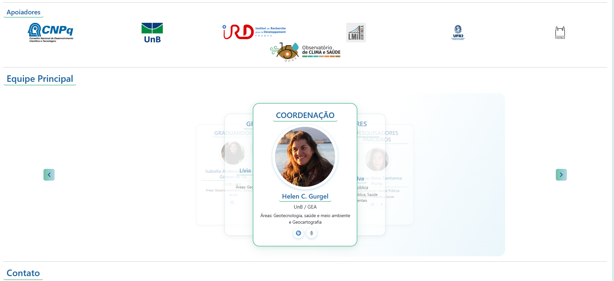

NOVOGeoCalor Dash — Painel Integrado (Python)
Painel unificado com todas as análises: temperaturas, ondas de calor, eventos extremos, sistemas de alerta e impactos na saúde. Desenvolvido em Python/Dash com dados de 15 RMs (1981–2023).
Acessar dashboard